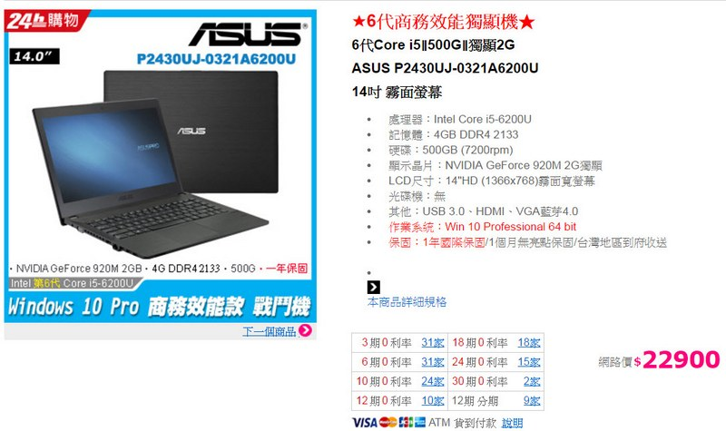

")
對Mac的誤解之一：Mac比PC貴？
|
Mac比PC貴
在購買電腦時，大家都覺得Mac很酷，很潮，但也比PC貴，因此一般預算買家會直接選擇安裝Windows的PC。事實上，Mac早就使用和PC一樣的x86架構，照道理說，硬體成本應該是和一般的PC差不多的。
Mac真的比PC貴嗎？這句話正確的說法，應該是「PC使用的硬體價格範圍較廣」。換句話說，你可以用很便宜的價格買到規格很爛的PC，但對應到Mac卻沒有廉價的版本。因為Mac的硬體再爛也是從相當不錯的規格起跳，如SSD、較高階的CPU, 因此比較最入門的PC和Mac，感覺似乎Mac比較貴，但事實上是如此嗎？
低價版產品
你可以隨便找一台14吋的PC，售價2萬出頭，規格如下：
處理器：Intel Core i5-6200U
記憶體：4GB DDR4 2133
硬碟：500GB (7200rpm)
顯示晶片：NVIDIA GeForce 920M 2G獨顯
NT$22,900

但是最便宜的Mac也有8G的記憶體，128GB的SSD硬碟，起跳就3萬多，
1.6GHz 雙核心 Intel Core i5 處理器
Turbo Boost 可達 2.7GHz
Intel HD Graphics 6000
8GB 記憶體
128GB PCIe 快閃儲存
NT$31,900
並不是PC比較便宜，而是Mac沒有這麼低階的產品，因為蘋果根本不在乎低階市場，要提供讓人基本滿意的使用體驗，4GB的記憶體和500GB的普通硬碟根本做不到。
正常版產品
一台較好用的PC，基本上規格如下：
Intel Core i5-7200U , 3.1GHz
LPDDR3 8G(on board) 無法擴充
512G M.2 SSD
Intel® HD graphics 620
NT$37,900
對應到蘋果產品的Mac，基本上就是MacBook Air了。我們就以可以流暢使用寫程式、做3D，影音轉檔的規格來說，那就是13吋的MacBook Air，其規格如下：
1.6GHz 雙核心 Intel Core i5 處理器
Turbo Boost 可達 2.7GHz
Intel HD Graphics 6000
8GB 記憶體
256GB PCIe 快閃儲存
NT$38,900
可以看到當規格拉到稍好(就是用起來較順暢的正常使用)，Mac和PC之間的價格就差不多一樣了，當然前題是上述兩款電腦的基本硬體是差不多的。
高階版產品
最高階的Mac就是MacBook Pro 15，目前售價是92990台幣，對應到的PC是Dell Precision M5510_8，售價是92000台幣。PC多了一台1TB的傳統硬碟，但SSD比較小，是256GB，另外PC的解析度是4K，Mac是3K，其它規格大同小異(圖型加速卡的速度差距不大，參考這篇https://hardrealm.com/en/video/Radeon-Pro-455-vs-Quadro-M1000M)
因此看起來當PC和Mac的規格越來越好時，價格就差不多了。
看不到成本
PC有很多隱藏成本，隨便列出兩個你就知道了。
- Microsoft Office：4000元(家用版)或7700元(中小企業版)
- 防毒軟體：約2000元
在Mac上，有現成的Apple的Office類軟體，是免費的，另外Mac上是不需要防毒軟體的。這樣算一下，一套可用又安全的Windows 10，在同樣的硬體規格下，是比Mac貴上5000-8000元。當然如果你說不用安裝防毒軟體，也不需要買Office，那我也就不多說了。
結論
很多人在購買電腦時，總覺得PC物超所值，Mac比較貴。但就不算擁有成本了，購買成本的PC也沒有比較便宜。事實上硬體工業目前製作成本已經大同小異了，再加上Mac早就使用了x86架構，兩者硬體元件差不多，當然成本也會一樣。下次當你要買電腦時，如果目標是中高階的產品，可以考慮買台Mac(也可以安裝Windows)。